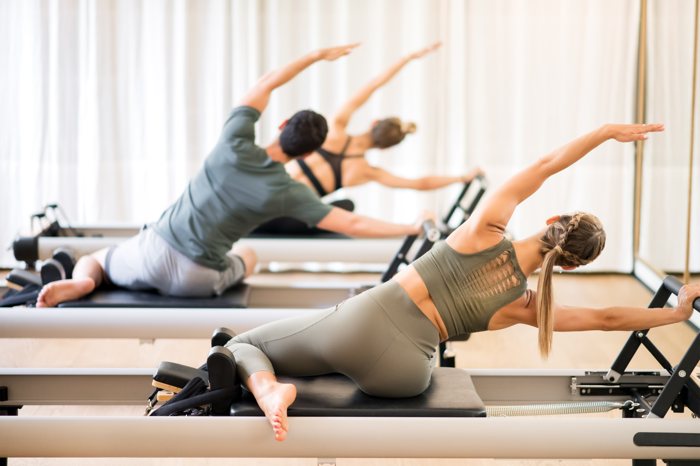
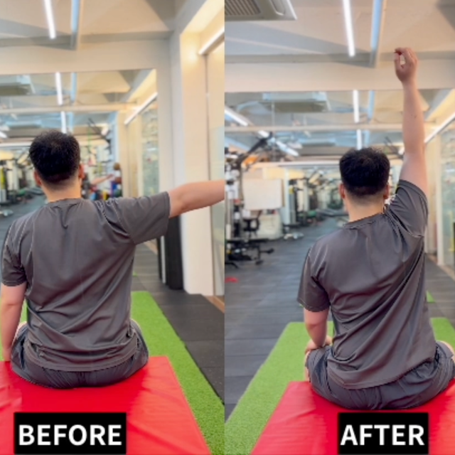
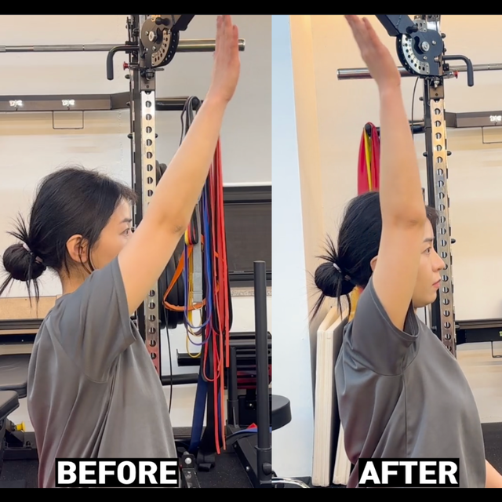
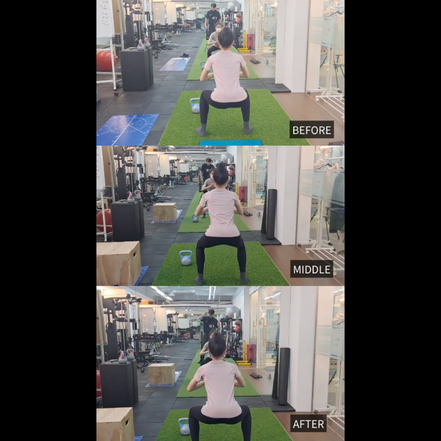

물리치료사
정도건
연세대학교 재활보건학. KAOMT 오스테오파시, FDM Practitioner.

모두에게 맞는 운동은 없습니다.
성수·역삼·약수·인천에서, 내 움직임부터 다시 봅니다.
물리치료사·카이로프랙터가 1:1을 전담합니다. 지점은 생활권이고, 몸을 읽는 기준은 같습니다.
잠깐 풀리고 다시 오는 불편일수록, 전공자가 원인을 읽을 때 변화가 분명합니다. 물리치료·카이로프랙틱 전문가가 1:1로 움직임 패턴을 다시 잡습니다.
물리치료사·카이로프랙터 등 근골격 전공자가 1:1로 전담합니다. 풀어 주는 데서 끝내지 않고, 움직임 패턴을 다시 잡습니다.
연세대학교 재활보건학. KAOMT 오스테오파시, FDM Practitioner.
기능재활 트레이너. 운동전문물리치료 · 스포츠재활 · 필라테스 지도.
기능재활 트레이너. 재활의학 현장과 컨디셔닝 경험을 연결합니다.
서강대 스포츠코칭 석사. S&C · 기능 움직임 코칭.
관절이 안전하게 움직일 수 있는 필라테스 라인을 담당합니다.
D.C. 前 한서대 건강관리학과 전임조교수. 인천아시안게임 세팍타크로 팀닥터.
D.C. · 물리치료사. 前 서울아산 도수치료과장, 연세척추재활 도수운동치료센터장.
상담으로 방향을 잡고, 체형·움직임·촉진으로 확인합니다. 장비 숫자만으로 끝내지 않습니다.
메디컬 기반 상담법으로, 어디가 불편한지보다 언제·어떤 동작에서 무너지는지를 듣습니다.
정렬과 자세를 확인합니다. 성수·역삼에서는 다시점 이미지 센서(4DEYE)를 활용할 수 있습니다.
관절이 실제로 어떻게 움직이는지, 보상 패턴이 어디서 시작되는지를 봅니다.
전문가의 손으로 긴장과 제한을 직접 확인합니다. 기계가 놓치는 부분을 마지막에 짚습니다.
고려대학교 생체역학 및 운동재활 연구실과의 연구 협력을 바탕으로 프로그램을 다듬어 왔습니다.
센터가 몸을 어떻게 보는지, 짧게 보여 드립니다.
김인준 · 이론이 아니라 현장에서 변하는 프로그램
최홍택 · 그 사람에게 맞는 움직임 패턴을 회복합니다

“풀어 주는 데서 끝내지 않습니다.
같은 불편이 다시 나오지 않게 움직임을 맞춥니다.”
박준규 · 움직임을 해석하는 미국 카이로프랙터·물리치료사
같은 평가, 같은 자세에서 다시 잽니다. 풀린 느낌이 아니라, 움직임이 달라진 장면입니다.

어깨만 풀면 재발하는 경우가 많습니다. 흉추·경추 움직임을 같이 봅니다.

팔을 올리는 각도와 날개뼈 경로를 같은 자세에서 다시 잽니다.

한쪽으로 무너지는 스쿼트는 고관절 회전 제한이 원인인 경우가 많습니다.
자세가 무너진 분과, 움직임이 막힌 분은 출발점이 다릅니다. 평가 후에 맞는 줄을 안내합니다.
번호와 영업시간이 지점마다 다릅니다. 아래 정보가 예약에 쓰는 확정값입니다.